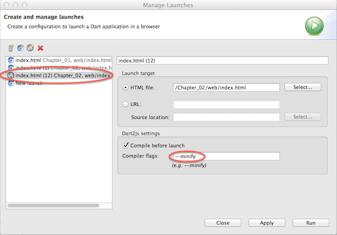
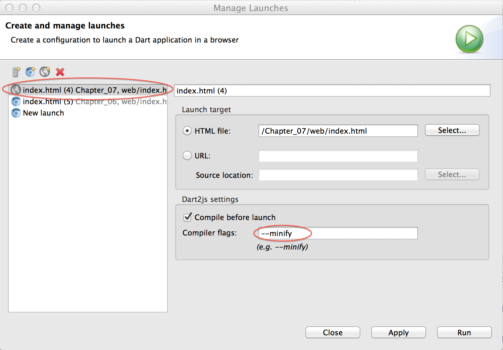

Production Deployment
This chapter shows how to create tree-shaken, minified JavaScript that can run in any modern browser.Running the Sample App
The code for this chapter is in the Chapter_07 directory of the angular.dart.tutorial download. View it in Dart Editor by using File > Open Existing Folder... to open the Chapter_07 directory.
Before running the app, get the packages, temporarily set the DART_SDK environment variable, and run the code generator. For example:
Now run the app in your default web browser. In Dart Editor’s Files view, select Chapter_07/web/index.html, right-click, and choose Run as JavaScript.
After the app is compiled to JavaScript, the app should appear in your default browser. You can copy the app’s URL into any other browser you’d like to test.
Overview
When deploying your app in production you need to make sure that:
- compiled ( dart2js) output is small
- application performs as well in JavaScript as it does in Dart VM
- application runs not only in Chrome, but other supported modern browsers
AngularDart and di heavily rely on dart:mirrors APIs. Mirrors allow AngularDart to provide super fast developer friendly edit-refresh cycle, without needing to run slow compilers and code generators. However, mirrors come at a cost:
- use of mirrors disables very important optimizations performed by dart2js compiler, such as tree-shaking, which allows removal of unused code from the output, resulting in very large JavaScript file.
- mirrors are much slower compared to static Dart code, which might not be an issue for smaller/medium applications, but in larger apps might become noticeable. Dart team is constantly working on improving performance of mirrors, so long-term it’s not a problem, but in short-term it’s something you might need to think about.
Here we will provide some tips on these subjects.
Managing Compiled Code Size
Minification
dart2js allows you to minify the resulting JavaScript, which:
- removes unnecessary whitespace
- shortens the class and field names
Minification can reduce your resulting JavaScript by 2-3x.
One way to minify is to run pub build, which has
minification turned on by default:
Another way is through Dart Editor:
-
Click the arrow next to the Run button, and choose Manage
Launches....
 - In the list of launches, choose the dart2js (gray world) icon for Chapter_07, web/index.html.
-
Specify the --minify compiler flag.

@MirrorsUsed
To help manage the code size of applications that use mirrors, Dart
provides a
@MirrorsUsed annotation. This annotation tells the
dart2js compiler which targets (classes, libraries, annotations, etc.)
are being reflected on. This way dart2js can skip all the unused stuff
thus radically reducing the output size.
@MirrorsUsed is often hard to get right as it really
depends on how/if you use code generation (discussed later in
“Optimizing Runtime Performance” chapter). Assuming you do use code
generation (as we do in this chapter) and are using angular >=0.9.5,
your annotation could look like this:
If you classes are not annotated by @Ng... and are used in
expressions, you will need to add the classes (or their libraries) to
your application’s @MirrorsUsed annotation.
(The @MirrorsUsed code for this app used to be much
longer, but as of 0.9.5, Angular has default definitions that include
the APIs you’re likely to need.)
Debugging
If it happens that you have misconfigured @MirrorsUsed,
you will likely be seeing errors like “Cannot find class for: Foo” or
your directives/components/controllers will be ignored when running in
JavaScript. Usually, the easiest fix is to just add that class (or the
whole library) to @MirrorsUsed.targets.
It’s much easier to debug @MirrorsUsed while working with
unminified dart2js output, as you’ll be able to see unminified
class/field names and to more easily identify what is missing.
Optimizing Runtime Performance
Currently there are two code generators: di and AngularDart Parser generators.
di Code Generator
di.dart Injector uses dart:mirrors APIs for retrieving types of constructor parameters and invoking the constructor to create new instances. The generator generates static code for creating new instances and resolving dependencies.
You can find an example of how to use the di generator in
bin/generator.dart file.
Discovering Instantiable Types
Ideally, types that are instantiated by the injector should be extracted from the module definitions, however currently di modules are dynamically defined and are mutable, making them very hard (impossible in some cases) to analyze statically.
The generator has to rely on some guidance from the user to mark
classes that injector has to instantiate. There are two ways of doing
this: @Injectables or custom class annotation.
@Injectables is an annotation provided by the di package
which can be applied on a library definition with a list of types that
the generator should process.
@Injectables annotation should be mainly used with classes
that are out of your control (ex. you can’t modify the source code –
third party library). In all other cases it’s preferable to use custom
class annotation(s).
You can define your own custom class annotations
and apply them on classes that you need to be instantiated by the injector.
You can then then configure generator to look for those annotations.
When configuring the generator with the custom annotation you need to
pass a fully qualified class name (including the library prefix). In
case of the above example the fully qualified name of Service annotation
would be injectable.InjectableService.
AngularDart Parser Generator
AngularDart Parser Generator extracts all expressions from your application and then compiles them into Dart, so at runtime it doesn’t have to parse those expressions and while invoking the expressions it uses pre-generated code to access fields and methods, so it doesn’t have to use mirrors.
There are many places in the application where expressions can be used:
- HTML template attributes
- mustaches {{ }} (technically a directive)
- custom syntax directives like
ng-repeat - component/directive attribute mappings
- programmatic calls to
Scope.$eval,Scope.$watch/$watchCollection,Parser.call, etc.
It’s not always trivial to tell if element attribute in HTML template contains an expression or just a string value.
Expression extractor has to:
- find all component/directive definitions in the source code and
extract their metadata (
NgAnnotations, field attribute mapping annotations) - statically “compile” all the templates to identify all directives and extract all attributes and mustaches that contain expressions
Sometimes directives with attributes mapped with @ spec can
subsequently call Scope.$eval on the string value of the
attribute. In those cases directive can tell expression extractor that
attribute value is used in this way via exportExpressionAttrs
property on NgDirective/NgComponent
annotation. Ex:
Similarly, if directive programmatically evaluates an expression it can tell expression extractor which expressions it evaluates:
You can find an example of how to use the parser generator in
bin/generator.dart file.
Code Generators and Development Mode
You should not be using code generators during development, as they are slow and can significantly degrade productivity. Instead, during development it’s better to use dynamic versions of di Injector and Parser and use generators only for testing and production.
In web/main.dart you can see
initializer-prod.dart file being imported, which has
initializer-dev.dart counterpart. Switching between those
two file will allow you to switch between prod and dev modes. You will
need to run the generator script before using the prod mode.
It is highly recommended that you automate (via a script or a flag on the server) the prod/dev mode switching to minimize the chance of dev mode being released into production.
Cross-browser Support
Angular components use Shadow DOM, but unfortunately it’s not natively supported in all modern browsers, so you would need to use a polyfill.
Include the script tag before any other script tags:
or the debug version:
NOTE: Using the polyfill has some limitations, so make sure you are aware of those limitations before you start using it.